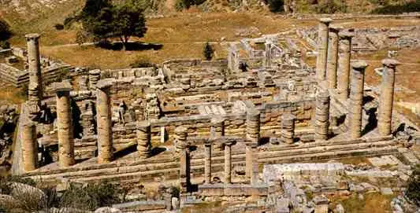

consultar costumbres
consultar video
margenes
.
tabla
| Costumbres griegas | Descripción | Ejemplo |
|---|---|---|
| Filosofía | Los antiguos griegos fueron pioeros en la filosofía, una forma de pensamiento que busca respuestas a preguntas fundamentales sobre la vida, la existencia y la moralidad. | Platón, Aristóteles y Sócrates son algunos de los filósofos más famosos de la antigua Grecia. |
| Juegos Olímpicos | Los Juegos Olímpicos antiguos se celebraban en Grecia cada cuatro años en honor al dios Zeus. Participantes de toda Grecia competían en eventos como la carrera de velocidad, la lucha y el lanzamiento de disco. | Los Juegos Olímpicos modernos son una versión actualizada de los Juegos Olímpicos antiguos. |
| Mitología | La mitología griega estaba llena de dioses y diosas con personalidades y poderes únicos. Los antiguos griegos creían que estos dioses intervenían en sus vidas cotidianas y los honraban a través de rituales y ofrendas. | Zeus era el dios del trueno y del rayo, mientras que Atenea era la diosa de la sabiduría y la guerra. |
| Democracia | La democracia surgió en Atenas en el siglo V a.C. y permitió que los ciudadanos participaran en la toma de decisiones políticas. | Los ciudadanos se reunían en la Asamblea para votar y discutir cuestiones políticas importantes. |
| Teatro | Los antiguos griegos desarrollaron el teatro como una forma de entretenimiento y educación. Las obras de teatro se representaban en grandes festivales y abordaban temas como la política, la religión y la historia. | Esquilo, Sófocles y Eurípides son algunos de los dramaturgos más famosos de la antigua Grecia. |
| Arte y arquitectura | Los antiguos griegos crearon algunas de las obras de arte y arquitectura más famosas del mundo. Sus esculturas, pinturas y edificios se caracterizan por su realismo, equilibrio y proporción. | El Partenón en Atenas es uno de los edificios más conocidos de la antigua Grecia. |
| Epopeyas | Las epopeyas eran largos poemas épicos que contaban historias heroicas sobre dioses y mortales. La Ilíada y la Odisea de Homero son dos de las epopeyas más famosas de la antigua Grecia. | La Odisea cuenta la historia de Odiseo, un guerrero griego que lucha por volver a casa después de la Guerra de Troya. |
| Oráculos | Los oráculos eran lugares sagrados donde los antiguos griegos buscaban respuestas de los dioses. Los sacerdotes y sacerdotisas interpretaban los mensajes de los dioses y a menudo hacían predicciones sobre el futuro. | El Oráculo de Delfos era uno de los más famosos de la antigua Grecia. |